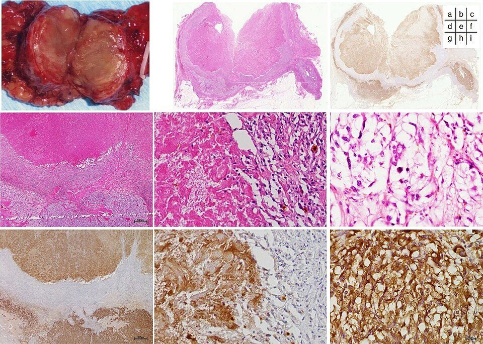

General information only. It does not replace advice from your care team and should not be used to choose a treatment.


At a glance
| How common | 2-8 cases per million a year; in 0.2-0.6% of people with high blood pressure |
| Where | Adrenal medulla (phaeochromocytoma) or nerve ganglia of abdomen, chest, head and neck (paraganglioma) |
| Symptoms | Triad: headache, sweating and palpitations in attacks, with high blood pressure |
| Inheritance | 35-40%: SDHB, SDHD, VHL, RET (MEN2), NF1 and others |
| Treatment | Surgery after alpha-blocker preparation; radiopharmaceuticals; chemotherapy |
What they are
Neuroendocrine tumours arising from chromaffin cells that produce catecholamines (adrenaline, noradrenaline, dopamine). Head and neck paragangliomas (carotid body, middle ear) often produce no hormones. All can spread (the old benign/malignant division has been dropped; all are considered to have metastatic potential).
Symptoms
Attacks of high blood pressure with severe headache, sweating, palpitations, pallor, tremor and anxiety, which may be triggered by exertion, certain foods, drugs or anaesthesia. Also persistent high blood pressure, diabetes or weight loss. Many are found as adrenal incidentalomas.
Diagnosis
- Plasma or 24-hour urine metanephrines: the most sensitive test.
- CT or MRI; gallium-68 DOTATATE or 18F-DOPA PET.
- Genetic testing for every patient, because it changes follow-up for the patient and family.
Treatment
- Alpha-blocker preparation (doxazosin, phenoxybenzamine) for 1-2 weeks before surgery, to prevent severe crises during the operation, with plenty of salt and fluids.
- Laparoscopic adrenalectomy; in bilateral inherited forms, cortex-sparing surgery.
- Metastatic disease: radiopharmaceuticals (high-activity MIBG, lutetium-177 DOTATATE), chemotherapy (CVD or temozolomide), sunitinib, and belzutifan for HIF-pathway tumours.
Outlook
After surgery most are cured, but follow-up is lifelong with metanephrines, because they can recur or new tumours appear, especially in inherited forms (SDHB carries a higher risk of metastasis).
See also: Adrenocortical carcinoma, Medullary thyroid cancer, Clear cell kidney cancer.
History · Medicapedia
Phaeochromocytoma and paraganglioma in the history of medicine
How it was discovered, who studied it and how its treatment changed over the centuries, told on Medicapedia, our sister site on the history of medicine.
Read the history on Medicapedia ↗Sources
- Lenders JWM, et al. Pheochromocytoma and paraganglioma: an Endocrine Society clinical practice guideline. J Clin Endocrinol Metab. 2014;99:1915-1942. doi:10.1210/jc.2014-1498
- Fassnacht M, et al. Adrenocortical carcinomas and malignant phaeochromocytomas: ESMO-EURACAN Clinical Practice Guidelines. Ann Oncol. 2020;31:1476-1490. doi:10.1016/j.annonc.2020.08.2099
- NCI. Pheochromocytoma and paraganglioma treatment (PDQ). cancer.gov/types/pheochromocytoma